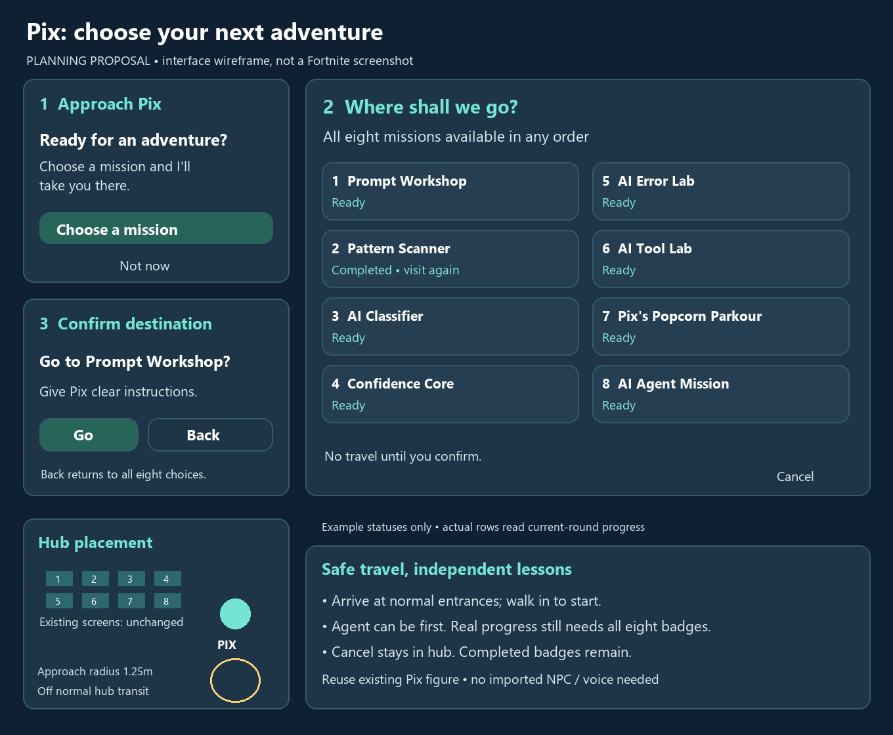

Proposed design for human review. Interactive wireframe; example status values, no real travel.
Choose a mission and I'll take you there.
All eight missions, any order.
Movement returns; no progress changes.
This wireframe shows the flow only. In game, the modal closes before travel; walk into the normal lesson start.

Move the existing Pix helper beside the screens; add one Talk control, one Verse adapter and eight destination teleports. Preserve mission geometry and rewards. Remove Agent's prerequisite badge lock, keeping its real rescue/delivery checks. Existing Return controls remain.
Detailed plan and exact arrival transforms · Campus blockout · Generated implementation plan · Review